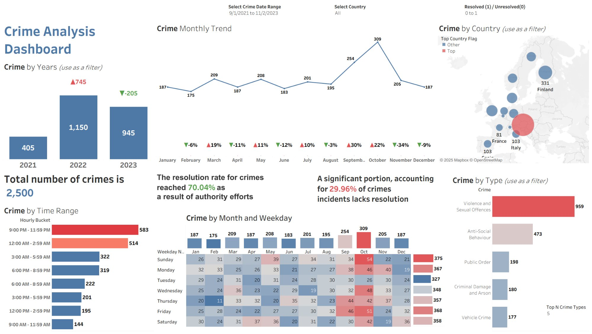

Case Studies
Selected works showcasing deep learning, data engineering, and end-to-end AI system design.
Netflix-style AI Recommender
End-to-end AI platform combining real-time semantic search, personalized recommendations, and executive analytics on a production data stack (MySQL, Hive/EMR, S3, MongoDB, ChromaDB).

Newspaper Text Mining & Recommender
End-to-end web scraping and NLP platform that collects articles from 4 newspapers, clusters them by latent topic, and serves a live Streamlit recommender application for multi-source story discovery.

AI-Powered Retail Q&A App
Natural-language question-answering system over retail transaction data using Vertex AI embeddings, pgvector semantic search on Cloud SQL PostgreSQL, and LangChain orchestration.

Crime Analysis Dashboard
Interactive Tableau workbook summarizing 2,500+ crime incidents across European countries (Sept 2021–Nov 2023) with temporal patterns, geographic distribution, and resolution performance metrics.

Sentiment Analysis Pipeline
End-to-end NLP pipeline classifying e-commerce customer sentiment from X (Twitter) posts using TensorFlow, Scikit-learn, and Apache Spark, with Power BI dashboards surfacing actionable brand insights.

Web Usage Mining Analytics
Apache web server log analysis pipeline extracting session statistics, referrer patterns, and frequent page co-occurrence rules using the Apriori algorithm for UX and operational intelligence.

Pattern Mining & Association Rules
Market Basket Analysis pipeline applying the Apriori algorithm to transactional retail data, generating ranked association rules by support, confidence, and lift for merchandising and cross-sell strategy.
No projects in this category yet.